Desde o GIMP 2.10, os modos de camada mudaram. Os antigos modos de camada perceptuais ainda estão disponíveis para compatibilidade com versões anteriores. Eles são chamados de “modos de camada legados”. Esses modos de camada legados serão usados ao carregar imagens criadas antes da introdução dos novos modos de camada, em sua maioria lineares.
Para mais informações sobre modos de camada em geral, consulte o padrão Modos de Camada.

If you need to stay compatible with older GIMP versions or you need to
use the legacy layer modes for other reasons, select the
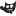 icon next to the Mode drop-down and change the setting
from Default to
icon next to the Mode drop-down and change the setting
from Default to
Figura 8.47. Imagens (máscaras) para exemplos de modos de camada

Máscara 1
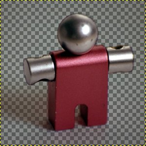
Máscara 2 (nota: esta imagem não é a máscara real usada, mas uma captura de tela da máscara com o padrão de xadrez mostrando as partes transparentes no GIMP)


Nas descrições dos modos de camada inferiores, as equações também são mostradas. Isto é para aqueles que estão curiosos sobre a matemática dos modos de camada. Você não precisa entender as equações, a fim de usar os modos de camada de forma eficaz, no entanto.
As equações estão em uma notação abreviada. Por exemplo, a equação
significa, “Para cada pixel da camada superior(Máscara) e da camada inferior (Imagem), somar cada um dos componentes de cor correspondentes entre si para formar a cor do pixel resultante(E). ” Componentes de cor do pixel devem estar sempre entre 0 e 255.
![[Nota]](images/note.png)
|
Nota |
|---|---|
|
A menos que a descrição abaixo diga o contrário, um componente de cor negativo é definido como 0 e um componente de cor maior que 255 é 255. |
Os exemplos abaixo mostram os efeitos de cada um dos modos legados. Note que, por simplicidade, omitiremos “(legado)” ao mencionar os modos de camada aqui.
Uma vez que os resultados de cada modo variam muito, dependendo das cores das camadas, essas imagens só podem dar uma idéia geral de como funcionam os modos. Você é encorajado a experimentá-los. Você pode começar com duas camadas similares, onde uma é cópia da outra, mas modificando-a ligeiramente (deixe a desfocada, movida, girada, redimensionada, inverta a cor, etc) e veja o que acontece em vários dos modos de camada.
Modos de Camada
- Normal
-
Neste grupo, apenas “Normal” é normal.
Figura 8.49. Exemplo para o modo de camada “Normal”

Ambas as imagens são combinadas uma com a outra com a mesma intensidade.

Com 100% de opacidade apenas a camada superior é mostrada quando a combinação é feita no modo “Normal”.
O modo Normal é o modo da camada padrão. A camada em cima cobre as camadas abaixo dela. Se você quer ver qualquer coisa abaixo da camada superior quando você usar este modo, a camada deve ter algumas áreas transparentes.
A equação é:
- Dissolver
-
Figura 8.50. Exemplo para o modo de camada “Dissolver”

Ambas as imagens são combinadas uma com a outra com a mesma intensidade.
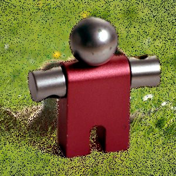
Com 100% de opacidade apenas a camada superior é mostrada quando se está usando o modo “dissolver”.
O modo Dissolver dissolve a camada superior na camada abaixo dela pelo desenho de um padrão aleatório de pixels em áreas de transparência parcial. É útil como um modo de camada, mas geralmente também é útil como um modo de pintura.
Isto é especialmente visível o longo das bordas em uma imagem. É mais fácil ver em uma captura de tela ampliada. A imagem à esquerda ilustra o modo de camada “Normal” (ampliada) e a imagem da direita mostra as mesmas duas camadas no Modo “Dissolver”, onde pode ser visto claramente como os pixels estão dispersos.


Modos de Camada
- Somente clarear
-
Figura 8.52. Exemplo para modo de camadas “Somente clarear”
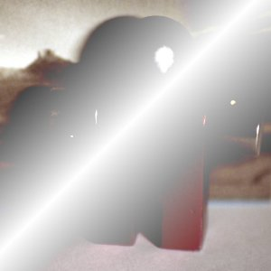
Máscara 1 é usada como a camada superior com 100% de opacidade.

Máscara 2 é usada como a camada superior com 100% de opacidade.
O modo compara cada componente de cada pixel na camada superior com o correspondente na camada inferior e utiliza o valor maior na imagem resultante. Camadas completamente pretas não têm efeito sobre a imagem final e camadas completamente brancas resultam em uma imagem branca.
A equação é:
Este modo é comutativo; não importa a ordem das duas camadas.
- Esconder
-
Figura 8.53. Exemplo para o modo de camada “Esconder”
Máscara 1 é usada como a camada superior com 100% de opacidade.
Máscara 2 é usada como a camada superior com 100% de opacidade.
O modo Esconder inverte os valores de cada um dos pixels visíveis nas duas camadas da imagem. (Isto é, ela subtrai cada componente deles de 255). Em seguida, ele os multiplica entre si, divide por 255 e inverte este valor novamente. A imagem resultante é geralmente mais brilhante, e às vezes de aparência “lavada”. As exceções a isto são as camadas em preto, o que não altera a outra camada, e uma camada em branco, o que resulta em uma imagem branca. Cores mais escuras na imagem aparentam ser transparentes.
A equação é:
Este modo é comutativo; não importa a ordem das duas camadas.
- Sub-exposição
-
Figura 8.54. Exemplo para o modo de camada “Sub-exposição”
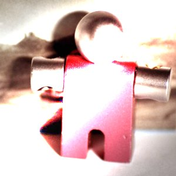
Máscara 1 é usada como a camada superior com 100% de opacidade.

Máscara 2 é usada como a camada superior com 100% de opacidade.
O modo Sub-exposição multiplica o valor do pixel da camada inferior por 256, que então divide pelo inverso do valor do pixel da camada superior. A imagem resultante é geralmente mais clara, mas algumas cores podem ser invertidas.
Na fotografia, a sub-exposição é uma técnica usada em uma câmara escura para diminuir a exposição em áreas específicas da imagem. Isso traz a tona detalhes as sombras. Quando utilizado para este fim, o modo Sub-exposição pode trabalhar melhor em imagens em tons de cinza e com uma ferramenta de pintura, em vez de um modo de camada.
A equação é:
- Adição
-
Figura 8.55. Exemplo para o modo de camada “Adicionar”

Máscara 1 é usada como a camada superior com 100% de opacidade.
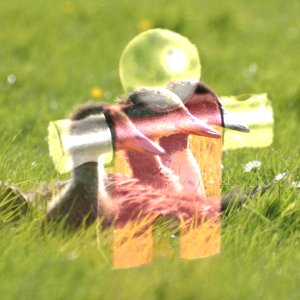
Máscara 2 é usada como a camada superior com 100% de opacidade.
O modo Adicionar é muito simples. Os valores de pixel da camadas superior e inferior são adicionados uns aos outros. A imagem resultante é geralmente mais clara. A equação pode resultar em valores de cores maiores que 255, portanto, algumas das cores claras podem ser ajustadas para o valor máximo de 255.
A equação é:
Este modo é comutativo; não importa a ordem das duas camadas.
Modos de Camada
- Somente escurecer
-
Figura 8.56. Exemplo para o modo de camadas “Somente escurecer”
Máscara 1 é usada como a camada superior com 100% de opacidade.
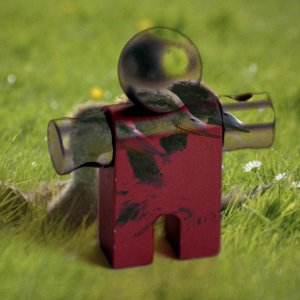
Máscara 2 é usada como a camada superior com 100% de opacidade.
O modo compara cada componente de cada pixel na camada superior com o correspondente na camada inferior e usa o menor valor na imagem resultante. Camadas completamente brancas não têm efeito sobre a imagem final e camadas completamente pretas resultam em uma imagem preta.
A equação é:
Este modo é comutativo; não importa a ordem das duas camadas.
- Multiplicar
-
Figura 8.57. Exemplo para o modo de camada “Multiplicar”
Máscara 1 é usada como a camada superior com 100% de opacidade.

Máscara 2 é usada como a camada superior com 100% de opacidade.
O modo Multiplicar multiplica os valores dos componentes dos pixels da camada superior com os da camada inferior e então divide o resultado por 255. O resultado é geralmente uma imagem mais escura. Se qualquer camada é branca, a imagem resultante é o mesma que a outra camada (1 * I = I). Se qualquer camada é preto, a imagem resultante é completamente preta (0 * I = 0).
A equação é:
Este modo é comutativo; não importa a ordem das duas camadas.
- Super-exposição
-
Figura 8.58. Exemplo para o modo de camada “Super-exposição”

Máscara 1 é usada como a camada superior com 100% de opacidade.
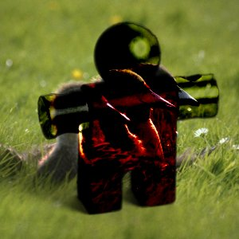
Máscara 2 é usada como a camada superior com 100% de opacidade.
O modo Super-exposição inverte o valor do pixel da camada inferior, multiplica-o por 256, divide por um mais o valor do pixel da camada superior e, em seguida inverte o resultado. Ele tende a tornar a imagem mais escura, um pouco semelhante ao modo “Multiplicação”.
Na fotografia, a Super-exposição é uma técnica usada em uma câmara escura para aumentar a exposição em áreas específicas da imagem. Isso torna visíveis mais detalhes nas partes claras. Quando utilizado para este fim, a Super-exposição pode funcionar melhor em imagens em tons de cinza e como uma ferramenta de pintura, em vez de um modo de camada.
A equação é:
Modos de Camada
- Sobrepor
-
Figura 8.59. Exemplo para o modo de camada “Sobrepor”
Máscara 1 é usada como a camada superior com 100% de opacidade.

Máscara 2 é usada como a camada superior com 100% de opacidade.
O modo Sobrepor inverte o valor do pixel da camada inferior, multiplica-o por duas vezes o valor do pixel da camada superior, adiciona isso ao valor original do pixel da camada inferior, divide por 255, e depois multiplica pelo valor do pixel da camada original inferior e divide por 255 novamente. O efeito geral é que ele escurece, a imagem, mas não tanto quanto com o modo “Multiplicar”.
Devido a um bug [3], a equação real é equivalente à Luz Suave. Isso não será corrigido para o modo de camada legado. No entanto, mesmo que você use explicitamente o modo de camada legado, o GIMP ainda definirá o modo de camada Sobreposição padrão. Imagens que tenham o modo de camada Sobreposição legado definido para uma camada, terão isso alterado para Luz Suave legado, já que é isso que ele efetivamente é.
- Luz suave
-
Figura 8.60. Exemplo para o modo de camada “Luz suave”

Máscara 1 é usada como a camada superior com 100% de opacidade.

Máscara 2 é usada como a camada superior com 100% de opacidade.
O Modo luz suave não está relacionado a “luz dura” em nada, além do nome, mas ele tende a fazer as bordas mais suaves e as cores não tão brilhantes. É semelhante ao modo “Sobrepor”. Em algumas versões do GIMP, o modo “Sobrepor” e o modo “Luz suave” são idênticos.
A equação é complicada. Ela precisa de Rs, o resultado do modo “Esconder”:
- Luz dura
-
Figura 8.61. Exemplo para modo de camada “Luz dura”
Máscara 1 é usada como a camada superior com 100% de opacidade.

Máscara 2 é usada como a camada superior com 100% de opacidade.
O modo Luz dura é bastante complicado porque a equação é composta por duas partes, uma para cores mais escuras e outra para cores mais claras. Se a cor do pixel da camada superior é maior do que 128, as camadas são combinadas de acordo com a primeira fórmula mostrada abaixo. Caso contrário, os valores de pixel da camadas superior e inferior são multiplicados e multiplicado por dois, e divididos por 256. Você pode usar este modo de combinar duas fotografias e obter cores brilhantes e bordas nítidas.
A equação é complexa e diferente de acordo com o valor >128 ou ≤ 128:
Combinando modos de camadas
- Diferença
-
Figura 8.62. Exemplo para o modo de camada “Diferença”

Máscara 1 é usada como a camada superior com 100% de opacidade.

Máscara 2 é usada como a camada superior com 100% de opacidade.
O modo Diferençasubtrai o valor do pixel da camada superior da camada inferior e, em seguida, toma o valor absoluto do resultado. Não importa a aparência das duas primeiras camadas, o resultado pode parecer bastante estranho. Você pode usá-lo para inverter os elementos de uma imagem, criando uma camada completamente branca no modo “Diferença” por cima, por exemplo.
A equação é:
Este modo é comutativo; não importa a ordem das duas camadas.
- Subtrair
-
Figura 8.63. Exemplo para o modo de camada “Subtrair”
Máscara 1 é usada como a camada superior com 100% de opacidade.

Máscara 2 é usada como a camada superior com 100% de opacidade.
O modo Subtrair subtrai os valores de pixel da camada superior dos valores de pixel da camada inferior. A imagem resultante é, normalmente, mais escura. Você pode ter um monte de preto ou uma imagem resultante quase preta. A equação pode resultar em valores negativos para as cores mais escuras, portanto, elas serão ajustadas para o valor mínimo de 0.
A equação é:
- Extrair grãos
-
Figura 8.64. Exemplo para a camada de modo “Extrair grãos”
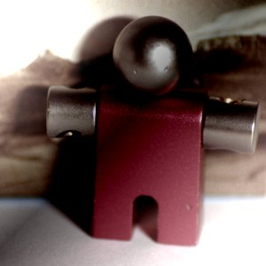
Máscara 1 é usada como a camada superior com 100% de opacidade.
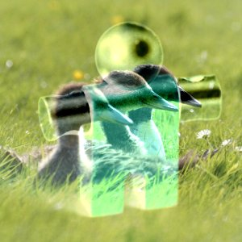
Máscara 2 é usada como a camada superior com 100% de opacidade.
O Modo Extrair grãos poderia extrair os “grãos do filme” de uma camada para a criação de uma nova camada que é composta só de grãos, mas também pode ser útil para dar as imagens uma aparência de relevo. Ele subtrai o valor do pixel da camada superior do pixel na camada inferior e adiciona 128.
A equação é:
- Mesclar grãos
-
Figura 8.65. Exemplo para o modo de camada “Mesclar grãos”

Máscara 1 é usada como a camada superior com 100% de opacidade.

Máscara 2 é usada como a camada superior com 100% de opacidade.
O modo Mesclar grãos combina uma camada de grãos (possivelmente criada a partir do Modo “Extrair grãos” ) na camada atual, deixando uma versão granulada da camada original. Ele faz exatamente o oposto de “Extrair de grãos”. Ele adiciona os valores de pixels das camadas superior e inferior e subtrai 128.
A equação é:
- Dividir
-
Figura 8.66. Exemplo para o modo de camada “Dividir”

Máscara 1 é usada como a camada superior com 100% de opacidade.

Máscara 2 é usada como a camada superior com 100% de opacidade.
O modo Dividir multiplica cada valor de pixel na camada inferior por 256 e depois divide pelo valor do pixel correspondente da camada superior mais um. (Ao adicionar um ao denominador evita-se a divisão por zero.) A imagem resultante é muitas vezes mais clara, e às vezes parece “queimada”.
A equação é:
Modos de Camada de Componentes HSV
- Matiz HSV
-
Figura 8.67. Exemplo para modo de camadas “Matiz”

Máscara 1 é usada como a camada superior com 100% de opacidade.
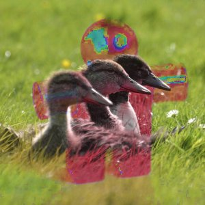
Máscara 2 é usada como a camada superior com 100% de opacidade.
O modo Matiz utiliza o matiz da camada superior e a saturação e o valor da camada inferior para formar a imagem resultante. No entanto, se a saturação da camada superior é igual for zero, a tonalidade é retirada da camada inferior, também.
- Saturação
-
Figura 8.68. Exemplo para o modo de camada “Saturação”

Máscara 1 é usada como a camada superior com 100% de opacidade.

Máscara 2 é usada como a camada superior com 100% de opacidade.
O modo Saturação utiliza a saturação da camada superior e o matiz e o valor da camada inferior para formar a imagem resultante.
- Cor
-
Figura 8.69. Exemplo para o modo de camada “Cor”
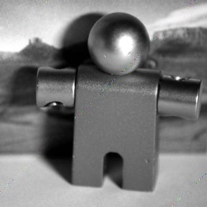
Máscara 1 é usada como a camada superior com 100% de opacidade.
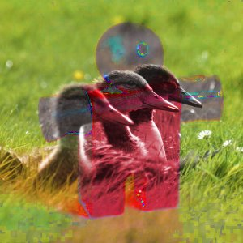
Máscara 2 é usada como a camada superior com 100% de opacidade.
O modo Cor usa o matiz e a saturação da camada superior e o valor da camada inferior para formar a imagem resultante.
- Valor
-
Figura 8.70. Exemplo para o modo de camada “valor”

Máscara 1 é usada como a camada superior com 100% de opacidade.

Máscara 2 é usada como a camada superior com 100% de opacidade.
O modo Valor utiliza o valor da camada superior e asaturação e o matiz da camada inferior para formar a imagem resultante. Você pode usar este modo para revelar detalhes em áreas escuras e claras de uma imagem sem alterar a saturação e as cores em geral.